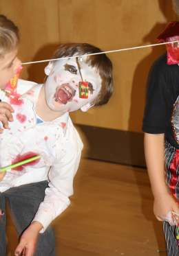

Beaver Scouts are the youngest section of the Scouting family, who are usually aged between six and eight years old, though they can be as young as five and three quarters.
Their activities are based around making things, outdoor activities, singing, playing games, going out on visits, investigating nature, listening to stories, learning how to be safe and most importantly, making new friends.
| Colony | Location | Contact |
|---|---|---|
| 1st St Marylebone | St Pauls Church Centre, 5 Rossmore Road, NW1 6NJ | join+1st+beavers@westminsterscouts.org.uk |
| 3rd Paddington | St Luke's Church Centre, Ashmore Road, W9 3EH | join+3rd+beavers@westminsterscouts.org.uk |
| 4th City of Westminster | St Vincent de Paul Primary School, Morpeth Terrace, SW1P 1EP | join+4th+beavers@westminsterscouts.org.uk |
| 8th St Marylebone | Mansergh Club, 24-28 Hill Road, NW8 9QG | join+8th+beavers@westminsterscouts.org.uk |
| 11th St Marylebone (Muslim Colony) | Mansergh Club, 24-28 Hill Road, NW8 9QG | join+11th+beavers@westminsterscouts.org.uk |